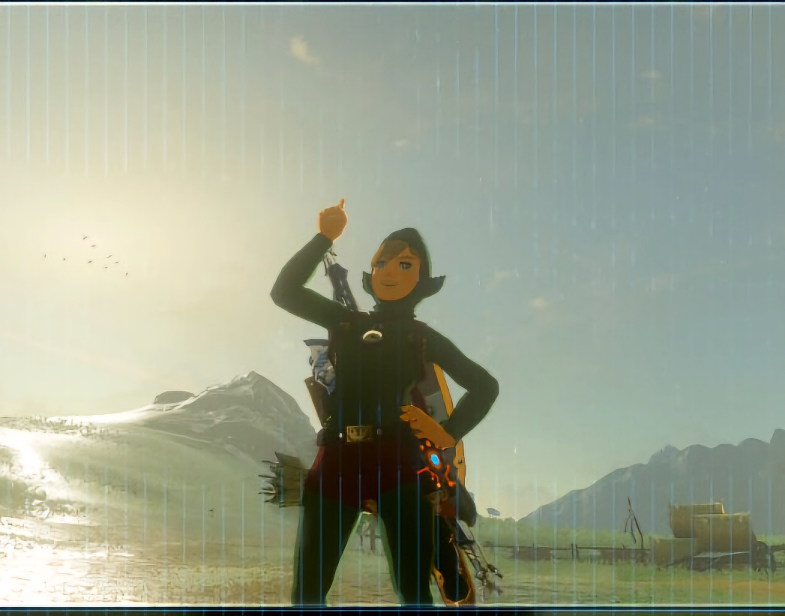

Some might know about a game called The Legend of Zelda: Breath of the Wild.
That great game that won the game of the year back in 2017. Known for its beautiful art style, an amazing open world and yadda yadda.
But today I wanted to share with you another reason why this game is so great. Its cosine.
Link, the character that you play as in this game can cook almost anything he can find in Breath of the Wild's open world.
I've picked three recipes from Breath of the Wild that I think you might find interesting, and in my opinion, are one of the bests.
But before we get into that, who is this Link?